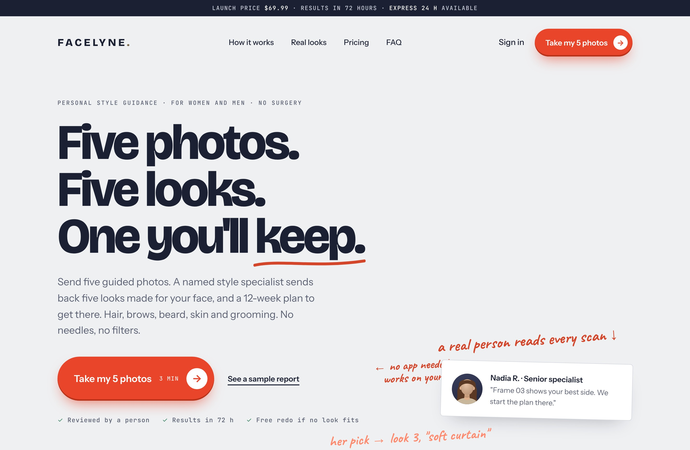
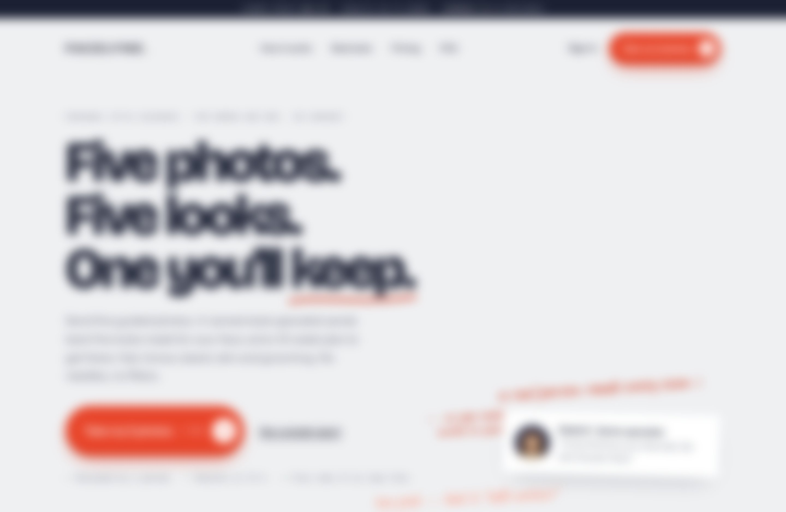
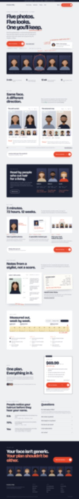
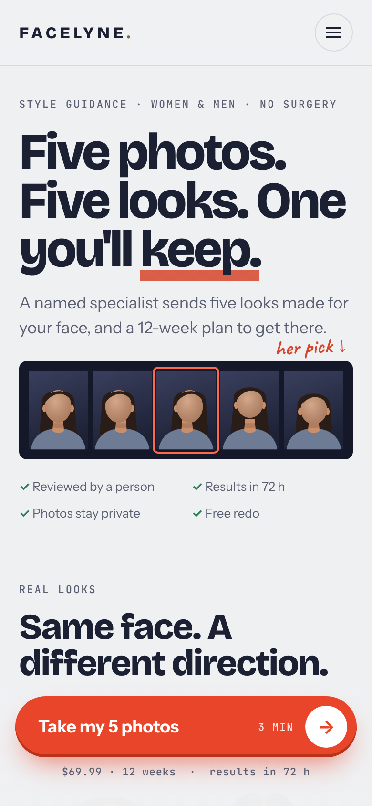
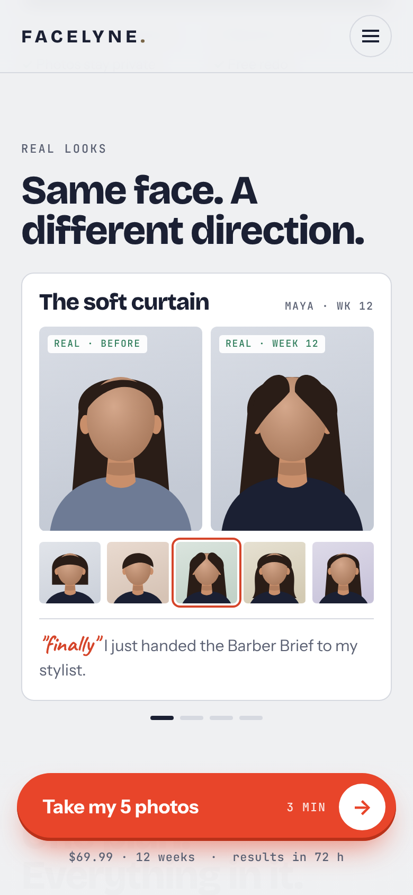
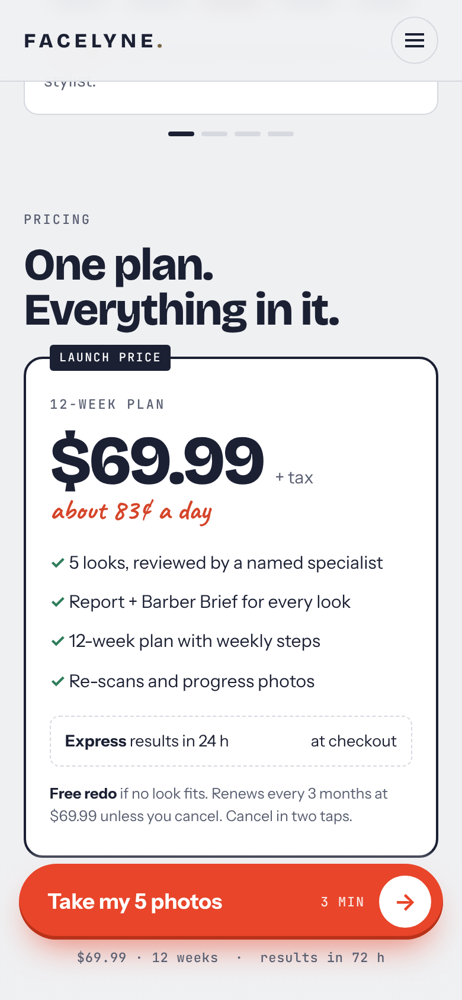

Every choice below serves one goal: whatever someone's mood or screen size, the next step, Take my 5 photos, is the easiest thing on the page to see and to tap.
Blur the page as if your eyes are half closed. What's left is what people notice first.

AS DESIGNED
HALF-CLOSED EYES only the buttons stay orange ✓The design rules behind each change, from top to bottom of the page.

WHOLE PAGE, BLURRED. THE ORANGE SHAPES ARE THE 6 CTAS, SPACED ROUGHLY ONE PER SCREEN.Only the buttons use filled orange. The price flag is now navy and "Meet the team" is an outline, so nothing else competes for attention (the isolation effect).
The top-of-page button is 72px tall with an arrow cap. On mobile it spans the full width. Bigger and closer targets get clicked more.
Menu cut from 5 items to 4. One button label everywhere: "Take my 5 photos". The current site uses "Start my analysis" six times without saying what happens.
A CTA appears right after each moment of conviction: the hero, the before/afters, how it works, pricing and the closing section. You're never more than a screen away from one.
"3 MIN" sits inside the button, with "no app needed" beside it. People click more readily when they know the effort involved.
"Free redo if no look fits" sits under the button and in the price card. Proposed offer, for Facelyne to approve.
Reviewed by a person, results in 72 h, free redo: the reassurance sits right under the CTA, where the hesitation happens, not three sections away.
Grease-pencil arrows lead to the chosen look and the button. They feel human, and they guide the eye from the proof to the action.
Headings 14.2:1, body text 5.5:1 (WCAG AA). White on orange is 3.95:1, which passes AA for large text; button labels are 20px bold.
Most visitors from Instagram arrive on phones. A docked button at the bottom of the screen stays under the thumb while the content scrolls behind it.
Same story, made for one thumb. The orange button stays docked at the bottom.

Headline, the contact sheet and trust signals, all visible without scrolling. The CTA is already under your thumb.

One story per card, swiped sideways. The before/after photos are clearly labelled real, and the chosen look is circled.

The daily price, express option, free redo and renewal terms in plain words, right above the button.